The ALMA-IMF continuum data
Adam Ginsburg, for the ALMA-IMF data reduction team:
Frédérique Motte ,
Adam Ginsburg ,
Patricio Sanhueza ,
Fabien louvet ,
Sylvain Bontemps ,
Csengeri Timea ,
Roberto Galván-Madrid ,
Fumitaka Nakamura ,
Amelia Stutz ,
Thomas Nony ,
Ana Lopez-Sepulcre ,
Tapas Baug ,
Nichol Cunningham ,
Manuel Fernandez Lopez ,
Andres E Guzman ,
Liu Hongli ,
Luke Maud ,
Fernando Olguin ,
Yohan Pouteau ,
Allison Towner
And the consortium:
Jonathan Braine ,
Edwige Chapillon ,
Huei-Ru Vivien Chen ,
Antoine Gusdorf ,
Natsuko Izumi ,
Xing (Walker) Lu ,
Jordan Molet ,
Brian Svoboda ,
K. Tatematsu ,
Rodrigo (Hernan) Alvarez (Guitierrez) ,
Mélanie Armante ,
John Bally ,
Cara Battersby ,
Mélisse Bonfand ,
Leonardo Bronfman ,
Nathalie Brouillet ,
Gemma Busquet ,
Jeff Desmond ,
Daniel Díaz ,
James Di Francesco ,
Gilberto C. Gomez ,
Matthias Gonzalez ,
Estrella Guzman ,
Patrick Hennebelle ,
Fabrice Herpin ,
Alexander Howard ,
Isabelle Joncour ,
Bilal Ladjelate ,
Yueh-ning Lee ,
Bertrand Le Floch ,
Pierre Lesaffre ,
Yuxin Lin ,
Ken Marsh ,
Anaelle Maury ,
Sasha Men’shchikov ,
Karl Menten ,
Estelle Moraux ,
Lee Mundy ,
Quang Nguyen Luong ,
Satoshi Ohashi ,
Marc Pound ,
Nicolas Reyes ,
Theo Richardson ,
Pedro Ruben Rivera Ortiz ,
Jean-Francois Robitaille ,
Erik Rosolowsky ,
Takeshi Sakai ,
Frédéric Schuller ,
Daniel Walker ,
Anthony Whitworth ,
Benjamin Wu ,
Friedrich Wyrowski
(How) does the core mass function (CMF) map to the stellar initial mass function (IMF)?
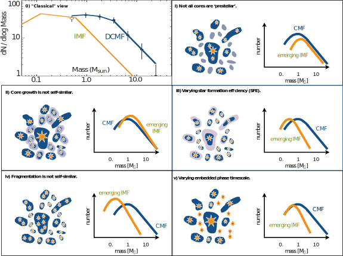
ALMA-IMF Initial Results
- Data Paper:
- High dynamic range images
- Careful treatment of continuum
- Millimeter spectral index maps
- Hundreds of cores measured in multiple cloud evolutionary stages
- Uniform beam and sensitivity
- First samples to include massive (M>10) cores
- Evolution of the CMF with region age
- High dynamic range images
- Careful treatment of continuum
- Millimeter spectral index maps
- Uniform beam and sensitivity
- First samples to include massive (M>10) cores
ALMA-IMF Data Soon
- Continuum data paper in prep (Ginsburg+, with big data reduction
team: Roberto Galvan-Madrid, Nichol Cunningham, Timea Csengeri,
Patricio Sanhueza, Fernando Olguin, Thomas Nony, Jordan Molet, Ana
Lopez, Yohan Pouteau, Andrez Guzman, Manuel Fernandez, Melisse
Bonfand)
- Self-calibration (10-500% dynamic range improvement)
- Mosaicing
- Continuum selection
- Method comparison
- Survey overview paper in prep (Motte+)
- Sample selection (evolutionary stages), highlights
- Catalog paper in prep (Louvet+)
- ~1000 cores cataloged
- Self-calibration (10-500% dynamic range improvement)
- Mosaicing
- Continuum selection
- Method comparison
- Sample selection (evolutionary stages), highlights
- ~1000 cores cataloged
ALMA-IMF data highlights


Measurements of the CMF
The CMF is not universal- Lu+ 2020: CMZ, α = 1.04±0.08
(α20kms = 1.07±0.11, αSB1o = 0.83±0.21, αSgrC = 1.00±0.13)
- Sanhueza+ 2019 IRDCs, α = 1.07±0.09
(αpre* = 1.17±0.10, αgetsf ≃ 1.35)
- Yu+ 2018 α ≃ 1.24 ± 0.17
- Liu+ 2018 α ≃ 0.86 ± 0.11
- O'Neill+ 2021 α ≃ 0.94 ± 0.08
- Motte+ 2018 α ≃ 0.90 ± 0.06
ALMA-IMF Early Results:
The CMF steepens with time?

Louvet+, in prep
Self-Calibration (B3)
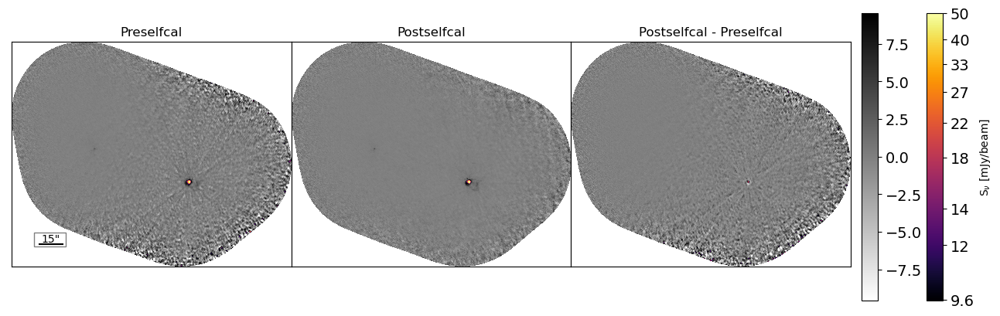Self-Calibration (B6)
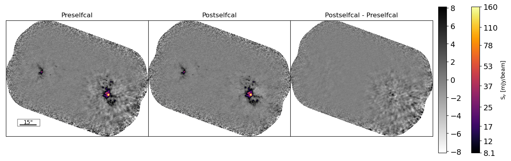
BSENS vs CLEANEST (B6)
G008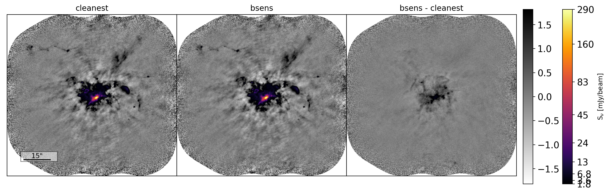
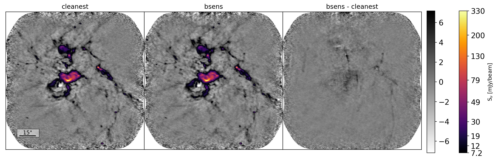
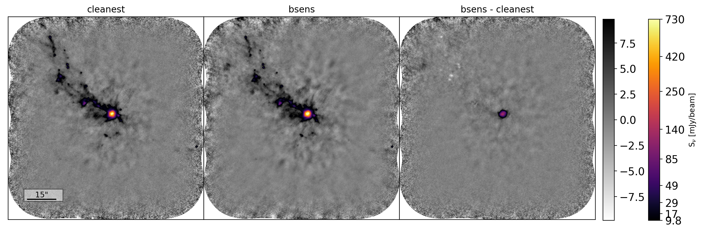
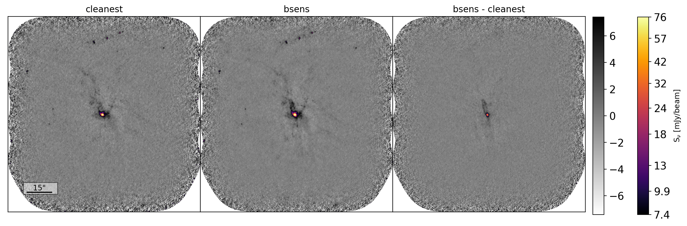
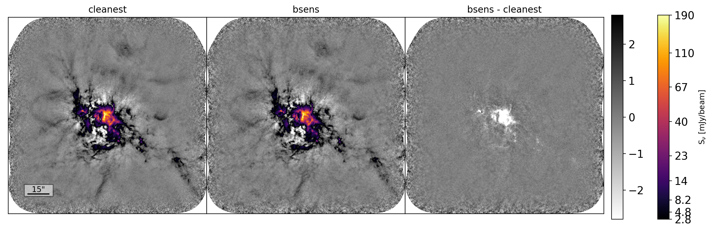
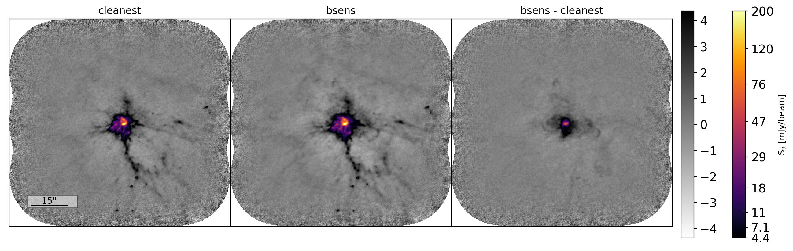
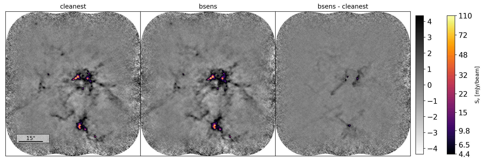
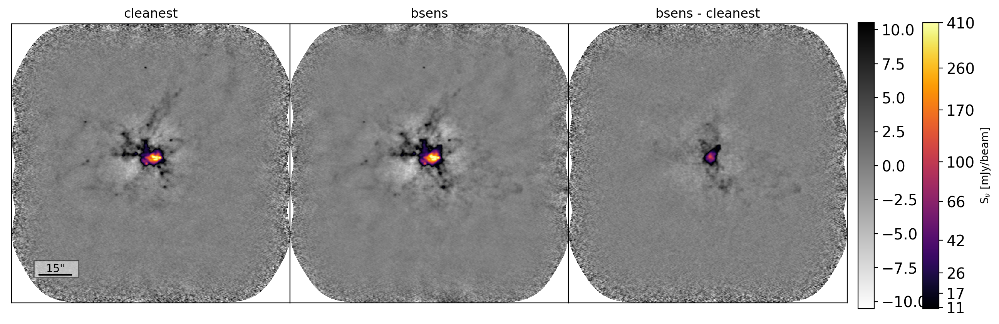
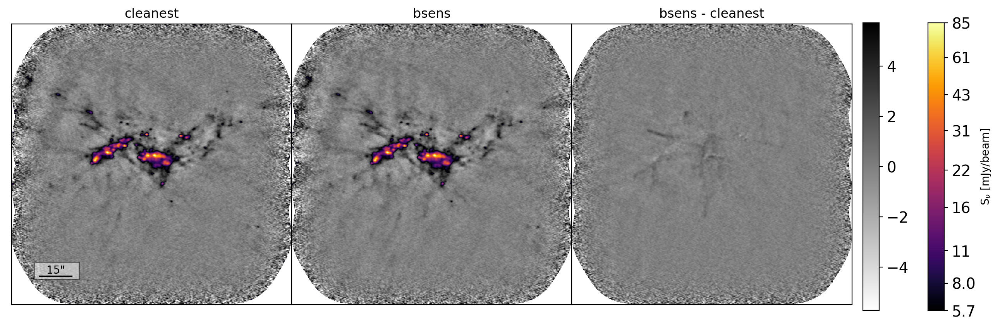
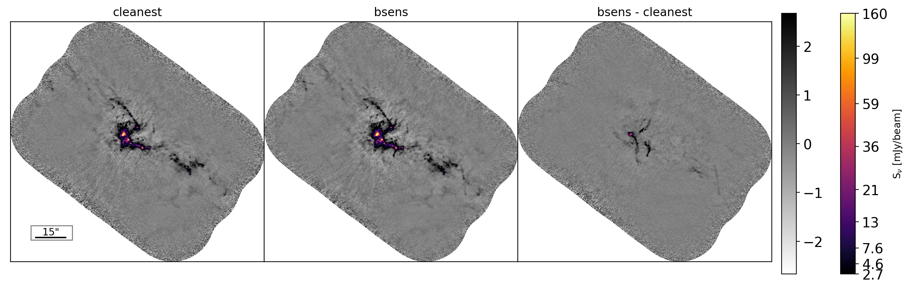
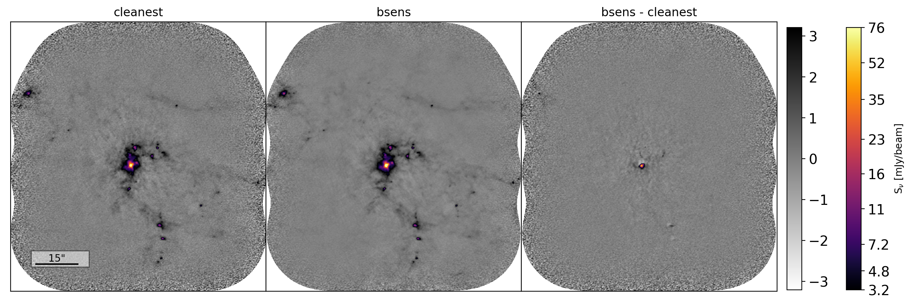
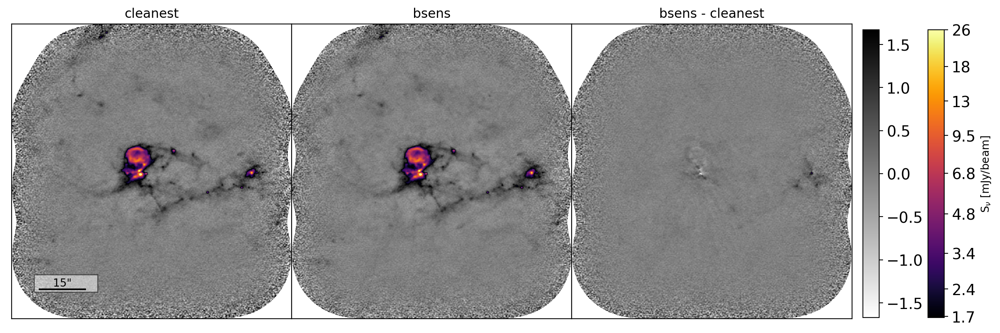
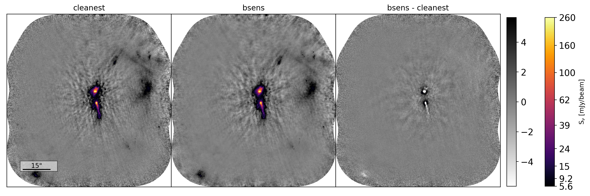
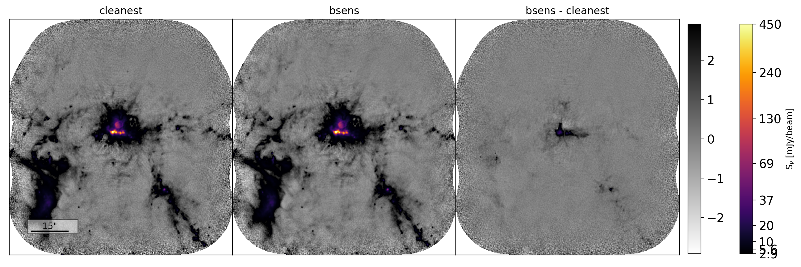


Spectral Index
We used α maps (& others) to assess ages of regions.On the Rayleigh-Jeans tail:
- Dust: α > 2 (β > 0 )
- Free-free: α ~ 0.1
- Synchrotron: α < 1
- Optically Thick: α = 2
(no mechanism implied!)
α map: G008


α map: G10


α map: G338


α map: W51IRS2


ALMA-IMF Initial Results
- Data Paper:
- High dynamic range images
- Careful treatment of continuum
- Millimeter spectral index maps
- Hundreds of cores measured in multiple cloud evolutionary stages
- Uniform beam and sensitivity
- First samples to include massive (M>10) cores
- Evolution of the CMF with region age
- High dynamic range images
- Careful treatment of continuum
- Millimeter spectral index maps
- Uniform beam and sensitivity
- First samples to include massive (M>10) cores


Flux histograms
: G008
Outset: Histogram of all data.
Inset: Zoom-in, with linear X-scale, near zero.
Inset, sub: histogram minus Gaussian model.
Inset: Zoom-in, with linear X-scale, near zero.
Inset, sub: histogram minus Gaussian model.


UV Histograms: Effective resolution, LAS
G008 B3


Continuum Selection
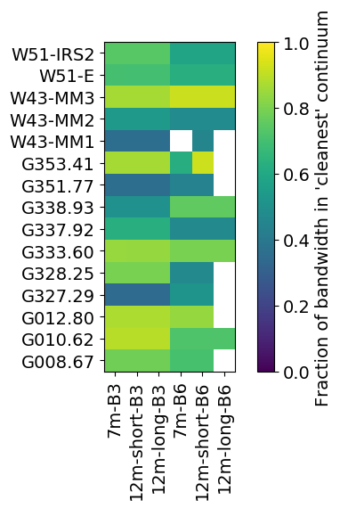


Histogram of spectral index
G008


BSENS self-calibrated (B3)


BSENS vs CLEANEST (B3) - G008